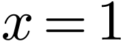
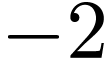
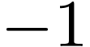
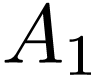
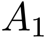
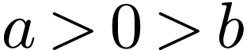

设集合，，则
| A. | B. | C. | D.  |
某社区通过公益讲座以普及社区居民的垃圾分类知识．为了解讲座效果，随机抽取 位社区居民，让他们在讲座前和讲座后各回答一份垃圾分类知识问卷，这位社区居民在讲座前和讲座后问卷答题的正确率如下图：
位社区居民，让他们在讲座前和讲座后各回答一份垃圾分类知识问卷，这位社区居民在讲座前和讲座后问卷答题的正确率如下图：
则
A.讲座前问卷答题的正确率的中位数小于％
B. 讲座后问卷答题的正确率的平均数大于％
C. 讲座前问卷答题的正确率的标准差小于讲座后正确率的标准差
D. 讲座后问卷答题的正确率的极差大于讲座前正确率的极差
若，则
A.  |
B. | C. | D.  |
如图，网格纸上绘制的是一个多面体的三视图，网格小正方形的边长为 ，则该多面体的体积为
，则该多面体的体积为
A.  |
B.  |
C. | D. |
将函数的图像向左平移 个单位长度后得到曲线
个单位长度后得到曲线 ，若关于轴对称，则
，若关于轴对称，则 的最小值是
的最小值是
A.  |
B. | C.  |
D.  |
从分别写有，， ，，
，， ，
， 的张卡片中无放回随机抽取张，则抽到的张卡片上的数字之积是的倍数的概率为
的张卡片中无放回随机抽取张，则抽到的张卡片上的数字之积是的倍数的概率为
A.  |
B. |
C. | D.  |
函数在区间的图象大致为
A. B.
C. D.
当时，函数取得最大值，则
| A.  | B. | C. |
D. |
在长方体 中，已知
中，已知 与平面
与平面 和平面所成的角均为，则
和平面所成的角均为，则
A.
B.  与平面所成的角为
与平面所成的角为
C.
D. 与平面所成的角为
甲、乙两个圆锥的母线长相等，侧面展开图的圆心角之和为 ，侧面积分别为和，体积分别为和.若，则
，侧面积分别为和，体积分别为和.若，则
A.  |
B. |
C. | D. |
已知椭圆 的离心率为，，分别为的左、右顶点，
的离心率为，，分别为的左、右顶点， 为的上顶点.若，则的方程为
为的上顶点.若，则的方程为
| A. | B. | C. | D. |
已知，，，则
| A.  | B. | C.  |
D. |
 在直线
在直线 和
和 的离心率为
的离心率为 在边
在边 和
和 ，
，

 为数列
为数列 的前
的前 项和．已知
项和．已知 在点
在点 的切线．
的切线． ，求
，求 ;
; 的焦点为
的焦点为 ，点
，点 两点．当直线
两点．当直线 轴时，
轴时， 的参数方程为
的参数方程为 的极坐标方程为
的极坐标方程为 ，
， 均为正数，且
均为正数，且 ，则
，则